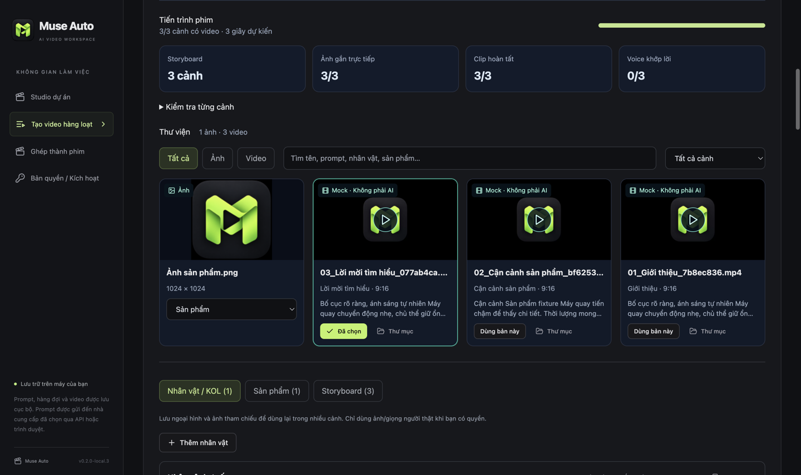

Chuẩn bị một lần
Viết từng prompt hoặc nhập CSV với hai cột filename,prompt. Xem trước danh sách trước khi thêm.
DÀNH CHO NHỮNG Ý TƯỞNG CẦN THÀNH HÌNH
Chuẩn bị prompt, đặt tên tệp, chọn thư mục. Muse Auto theo dõi hàng đợi, quản lý ảnh và clip theo từng cảnh, rồi ghép thành phim trên máy bạn.
AI Video Batch Generator · Desktop cho macOS & Windows
Bộ cài mới nhất cho macOS và Windows tại mục Tải ứng dụng.
Prompt → Hàng đợi → Chọn clip → Ghép phim.
STORYBOARD · THƯ VIỆN · GHÉP PHIM01 / QUY TRÌNH
Viết từng prompt hoặc nhập CSV với hai cột filename,prompt. Xem trước danh sách trước khi thêm.
Dùng Muse qua Chrome, đăng nhập tài khoản của bạn và chọn nơi lưu. Bạn tự chi trả tài khoản và credit theo nền tảng AI.
Theo dõi trạng thái, tạm dừng gửi mới và tải video đúng tên. Tác vụ đã gửi vẫn tiếp tục khi bạn tạm dừng.
DỮ LIỆU CỦA BẠN
Hàng đợi, tên tệp và video được lưu cục bộ. Prompt được gửi đến nhà cung cấp AI bạn chọn; đây không phải công cụ tạo video hoàn toàn ngoại tuyến.
KẾT NỐI HIỆN TẠI
Kết nối hiện mở trong ứng dụng: muse.ai qua Chrome, đăng nhập thủ công. Gemini và Flow đang tắt trong bộ chọn. Đây là điều khiển giao diện web, có thể thay đổi hoặc ngừng hoạt động khi dịch vụ bên thứ ba thay đổi.
TÍNH NĂNG / MUSE AUTO
Chuẩn bị nội dung hàng loạt, theo dõi từng tác vụ và dựng phim trong cùng một ứng dụng trên Mac hoặc Windows.
| Tính năng hiện có | Bạn làm được gì | Phạm vi hỗ trợ |
|---|---|---|
| Video từ văn bản | Nhập prompt, chọn nơi lưu và để Muse Auto theo dõi quá trình tạo, tải video về đúng tên tệp. | Muse qua Chrome · đăng nhập thủ công |
| Sản xuất hàng loạt | Nhập CSV, xem trước prompt và tên tệp, rồi chủ động thêm danh sách vào hàng đợi. | Tối đa 1.000 dòng mỗi tệp CSV |
| Chạy đồng thời | Xử lý đồng thời nhiều tác vụ Muse trên tài khoản đang đăng nhập; mỗi tác vụ có tab theo dõi riêng. | Phụ thuộc khả năng đáp ứng và hạn mức của Muse |
| Hàng đợi dễ kiểm soát | Theo dõi trạng thái, tìm kiếm, lọc, tạm dừng gửi mới hoặc hủy tác vụ trong app. | Tác vụ đã gửi có thể vẫn tiếp tục trên Muse |
| Studio theo dự án | Quản lý storyboard, ảnh nhân vật, sản phẩm và clip theo cảnh; lưu lựa chọn clip để dựng tiếp. | Thư viện ảnh/video và dữ liệu dự án trên máy |
| Prompt & caption affiliate | Tạo mẫu prompt tư thế nhân vật, caption và các biến thể nội dung từ thông tin sản phẩm bạn nhập. | Mẫu văn bản local, có thể sao chép và chỉnh sửa |
| Ghép phim & nhận diện | Ghép clip theo thứ tự, thêm voice nhập từ máy, nhạc nền, chữ theo cảnh, logo và CTA; xuất MP4. | Xử lý tại máy · nhiều tỷ lệ khung hình |
| Dùng thử trước khi mua | Nhận file trial miễn phí cho một thiết bị để trải nghiệm quy trình trước khi chọn gói. | 1 ngày · 24 giờ tính từ lúc cấp file |
Khả năng tạo video và thời gian xử lý phụ thuộc Muse AI, hạn mức tài khoản, mạng và máy của bạn. App hiện chưa mở tạo ảnh AI/2K, ảnh tham chiếu → video hoặc chạy nhiều tài khoản; không cam kết tốc độ render hay chạy liên tục không gián đoạn.
Trải nghiệm miễn phí 1 ngày ↗STUDIO / MỚI TRONG 0.2.0
Lưu ảnh nhân vật, sản phẩm và bối cảnh trong dự án. Theo dõi cảnh nào đã có clip, xem các bản thử và chọn bản dùng để dựng.

Storyboard, hồ sơ nhân vật và sản phẩm, ảnh nhập từ máy. Mẫu kịch bản local có thể chỉnh sửa; chưa phải AI viết kịch bản.
Thư viện có khung hình xem trước, tìm theo prompt và lọc từng cảnh. Lựa chọn “Dùng bản này” được lưu khi mở lại dự án.
Ghép clip với voice nhập từ máy, nhạc, phụ đề theo cảnh, logo và CTA. Xuất MP4 theo tỷ lệ phù hợp nội dung.
Muse hiện hỗ trợ văn bản → video. Tạo ảnh AI và ảnh → video qua Muse chưa được bật; chưa có phụ đề đồng bộ từng từ hoặc khớp khẩu hình. Ưu đãi tài khoản cho gói trả phí được ghi tại mục License.
Xem ghi chú bản phát hành hiện tại ↗DÀNH CHO AI?
Chuẩn bị nhiều góc giới thiệu sản phẩm, chỉnh hook và lời thoại trước khi tạo video.
Lưu sản phẩm, chia nội dung thành từng cảnh và ghép clip để giới thiệu hàng hoá.
Tạo video minh hoạ bài học, kể chuyện giáo dục và ghép từng cảnh thành bài giảng. Giáo viên kiểm tra kiến thức trước khi sử dụng.
Quản lý prompt, ảnh và nhiều bản clip theo dự án; giảm thao tác tải và ghép thủ công.
02 / LICENSE
Trải nghiệm
Bắt đầu với quy trình tạo video của bạn.
Giá cơ sở: 299.000đ cho 1 tháng.
Không tự động gia hạn
Chọn gói 1 tháng ↗Liên hệ email để thanh toánSử dụng ngắn hạn
Phù hợp cho một đợt sản xuất nội dung.
Tiết kiệm 33,2% so với mua 3 lần gói 1 tháng (897.000đ).
Không tự động gia hạn
Chọn gói 3 tháng ↗Liên hệ email để thanh toánTiết kiệm
Thêm 100.000đ so với gói 3 tháng để dùng 6 tháng.
Tiết kiệm 61,0% so với mua 6 lần gói 1 tháng (1.794.000đ).
Không tự động gia hạn
Chọn gói 6 tháng ↗Liên hệ email để thanh toánĐề xuất
Thanh toán một lần cho 12 tháng sử dụng, cập nhật và hỗ trợ.
Tiết kiệm so với mua 12 lần gói 1 tháng.
Không tự động gia hạn
Chọn gói 12 tháng ↗Liên hệ email để thanh toánPhần trăm tiết kiệm được tính theo tổng phí mua các gói 1 tháng tương ứng và làm tròn đến một chữ số thập phân. So sánh chỉ tính phí phần mềm.
Gói 12 tháng có giá 999.000đ, tặng 10 tài khoản Muse AI. Các gói cùng tính năng, khác thời hạn sử dụng.
Các gói cùng tính năng, khác thời hạn sử dụng. Thanh toán một lần cho mỗi lần mua, không tự động gia hạn. Không có phí kích hoạt hoặc subscription voice bổ sung.
Giá là phí phần mềm. Gói trả phí từ 1 tháng có ưu đãi tài khoản Muse AI nêu ở trên; trial không kèm tài khoản hoặc token AI.
Quyền sử dụng, cập nhật và hỗ trợ trong thời hạn gói. Tháng theo lịch, có xử lý ngày cuối tháng, bắt đầu từ lần kích hoạt đầu tiên. Gia hạn cộng từ ngày hết hạn nếu còn hiệu lực; nếu đã hết hạn tính từ lúc gia hạn.
Gói 12 tháng có quyền sử dụng, cập nhật và hỗ trợ trong 12 tháng. Các tính năng kết nối online phụ thuộc dịch vụ bên thứ ba.
Hết hạn gói cần gia hạn để tạo video mới. Hết hạn không xóa dự án hoặc video đã lưu.
Một máy hoạt động tại một thời điểm. Hủy kích hoạt để chuyển máy; máy hỏng/cài lại hệ điều hành: liên hệ hỗ trợ xác minh và phục hồi, không phải mua lại. License mới có grace tối đa 7 ngày khi server tạm lỗi. Hết hạn không xóa video/dự án và vẫn mở được thư mục.
Người dùng chịu trách nhiệm về mục đích sử dụng, nội dung tạo ra và quyền sử dụng dữ liệu đầu vào; phải tuân thủ pháp luật và điều khoản của nền tảng liên quan.
Bên cung cấp Muse Auto không chịu trách nhiệm cho hành vi sử dụng tool sai mục đích, vi phạm pháp luật hoặc quyền của bên thứ ba do người dùng thực hiện, trong phạm vi pháp luật cho phép.
Hỗ trợ kỹ thuật áp dụng cho lỗi và vấn đề của phần mềm Muse Auto trong thời hạn hỗ trợ của gói. Mỗi tài khoản Muse AI tặng kèm được đổi 1–1 tối đa 1 lần. Trạng thái, hạn mức và gián đoạn dịch vụ vẫn phụ thuộc Muse AI.
Các điều kiện này không loại trừ trách nhiệm bắt buộc của bên bán hoặc quyền hợp pháp của người dùng theo pháp luật áp dụng.
03 / TẢI ỨNG DỤNG
Bản ổn định 0.2.5
Apple Silicon & Intel
macOS 12.5 trở lên. Bản hiện tại ký ad-hoc; macOS có thể hiển thị cảnh báo bảo mật. Muse qua Chrome cần Chrome tương thích; khuyến nghị macOS 13 trở lên.
x64 · Installer .exe
Dành cho Windows x64. Windows có thể hiển thị cảnh báo bảo mật vì bộ cài chưa có chứng chỉ nhà phát hành. Cần cài Google Chrome riêng để dùng Muse.
04 / CÀI ĐẶT VÀ KÍCH HOẠT
Chọn bản Mac hoặc Windows ở mục tải xuống. Với Mac, chọn Apple Silicon hoặc Intel phù hợp với máy của bạn.
Mac: mở tệp vừa tải rồi kéo Muse Auto vào Applications. Windows: mở tệp vừa tải và làm theo hướng dẫn cài đặt.
Liên hệ để chọn gói và nhận hướng dẫn thanh toán. Sau khi nhận thông tin kích hoạt, mở mục Bản quyền / Kích hoạt trong ứng dụng và làm theo hướng dẫn.
Cài Google Chrome và đăng nhập tài khoản Muse của bạn. Nhập nội dung video hoặc tải danh sách từ tệp CSV, chọn nơi lưu rồi bấm bắt đầu.
05 / CÂU HỎI THƯỜNG GẶP
Lỗi và vấn đề của Muse Auto được tiếp nhận trong thời hạn hỗ trợ của gói. Mỗi tài khoản Muse AI tặng kèm được đổi 1–1 tối đa 1 lần; người dùng chịu trách nhiệm với hành vi dùng tool sai mục đích. Xem điều kiện sử dụng để biết phạm vi đầy đủ.
Có. Gói 1 tháng tặng 1 tài khoản, 3 tháng tặng 3 tài khoản, 6 tháng tặng 5 tài khoản và 12 tháng tặng 10 tài khoản Muse AI; mỗi tài khoản có 1 tỷ token. Tài khoản ưu đãi dùng đến khi hết token, được đổi 1–1 tối đa 1 lần cho mỗi tài khoản và vẫn chịu các giới hạn của Muse AI.
Gói gồm quyền sử dụng Muse Auto, cập nhật và hỗ trợ trong 12 tháng. Hết hạn cần gia hạn để tạo video mới; dự án và video đã lưu vẫn được giữ.
Mỗi gói dùng trên một máy tại một thời điểm. Khi cần chuyển máy hoặc cài lại máy, hãy gửi email kèm thông tin mua hàng để được hướng dẫn chuyển kích hoạt.
Nếu gói của bạn đã được kích hoạt, ứng dụng có thể tiếp tục dùng trong tối đa 7 ngày, miễn là gói chưa hết hạn. Các video đã tạo vẫn được giữ trên máy.
Gửi email đến charlie.nguyen.forwork@gmail.com để chọn gói và nhận hướng dẫn. Sau khi xác nhận thanh toán, bạn sẽ nhận thông tin kích hoạt. Nếu cần tìm lại, hãy liên hệ bằng email đã dùng khi mua.
Không. Người bán không nhận nội dung bạn nhập hoặc video của bạn. Nội dung cần tạo được gửi đến dịch vụ AI bạn sử dụng. Thông tin mua hàng và kích hoạt chỉ dùng để quản lý gói và hỗ trợ bạn.
BẮT ĐẦU BẰNG MỘT LÔ NHỎ